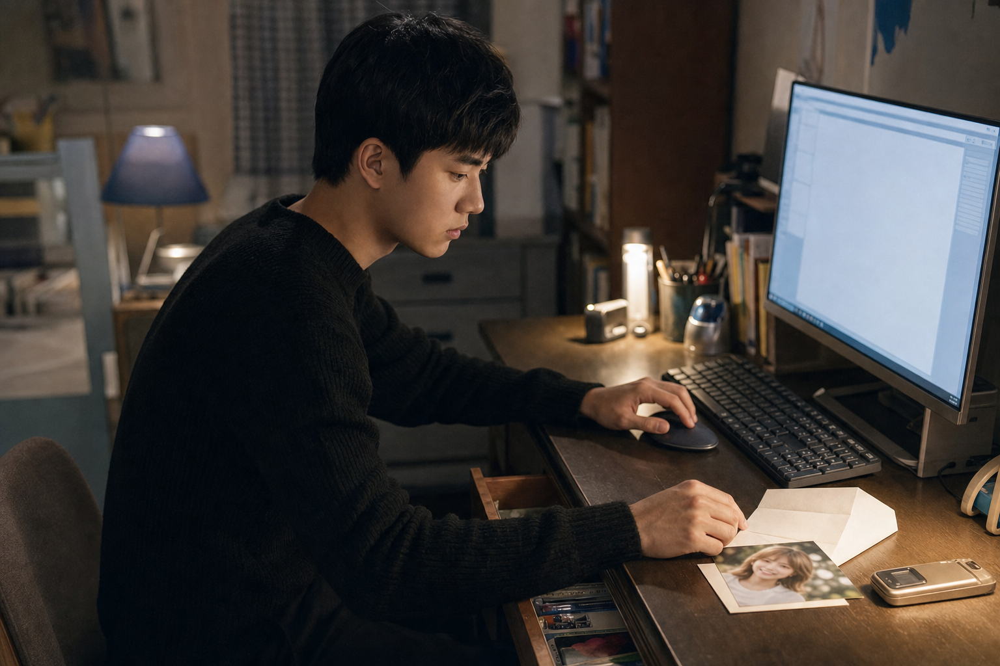

088. 답장
개강 후 첫 일본어 학원 두 번째 수업을 마치고 돌아온 밤이었다. 교실 앞 복도에서 한서윤과 헤어질 때, 그녀는 오늘은 별다른 말 없이 평범하게 손만 흔들었다. 며칠 전 팔짱을 끼고 어깨에 머리를 기대던 그녀와 같은 사람이라는 게 믿기지 않을 만큼 담담한 인사였다. 용식은 그 담담함이 오히려 낯설게 느껴질 정도로 최근 며칠을 예민하게 보내고 있었다. 집에 돌아와 씻고 방에 들어선 그는 습관처럼 컴퓨터를 켰다. 받은 메일함 맨 위에 낯익은 주소가 떠 있었다.
화면을 보는 순간 심장이 한 박자 늦게 뛰었다. 그는 마우스를 클릭하기 전에 잠깐 숨을 골랐다. 손끝이 마우스 위에서 가만히 멈춰 있었다.
메일은 서툰 한글과 히라가나가 섞여 있었다. 유즈키는 한국어를 배운 지 얼마 안 됐다며, 어려운 말은 사전을 찾아 썼다고 적어 두었다. 문장은 짧고 끊어졌지만, 그 어색함이 오히려 더 또렷하게 읽혔다.
용식은 그 문장을 두 번 읽었다. 화면 속 서툰 문장이 오히려 그녀의 목소리처럼 들렸다.
용식은 그 문장에 픽 웃었다. 서툰 한글 사이에 끼어든 웃음 표시가 그녀답다고 생각했다. 방 안에 혼자 앉아 소리 없이 웃는 자신의 모습이 새삼 낯설게 느껴졌다. 그 뒤로는 짧은 근황이 이어졌다. 새로 들어온 후배 스태프 얘기, 저녁마다 텔레비전으로 보는 드라마 얘기, 그리고 마지막 줄에는 이런 문장이 적혀 있었다.
용식은 그 문장 앞에서 손을 멈췄다. 눈이 오는 도쿄를 함께 보자던 약속이었다. 겨울까지 아직 넉넉한 시간이 남아 있었지만, 그 사이에 계약이 어떻게 될지, 그녀가 나고야로 돌아갈지, 아무것도 확정된 게 없었다.
모니터 화면을 잠깐 끄고 다시 켰다. 화면이 밝아지는 몇 초 동안, 그는 겨울에 정말로 다시 갈 수 있을지 스스로에게 되물었다. 초연과의 겨울방학 계획, 학비와 생활비, 무엇보다 또 한 번 두 달을 비울 핑계를 만들어야 하는 문제까지, 생각할수록 걸리는 게 늘어났다. 그래도 답을 미루지 않기로 했다.
새 답장 창을 열고 몇 줄을 썼다가 지웠다. 두 번째로 쓴 문장도 다시 지웠다. 세 번째에서야 손을 멈추지 않고 끝까지 밀고 나갔다.
커서가 마지막 줄 뒤에서 깜빡였다. 그는 잠깐 더 고민하다가 한 줄을 더 얹었다.
전송을 누르고 나서도 그는 한동안 모니터 앞에 앉아 있었다. 창밖으로 가로등이 켜지는 시간이었다. 방금 쓴 문장들이 정말 그녀에게 위로가 될지, 아니면 지키지 못할 약속만 하나 더 얹는 건지 알 수 없었다.
폴더폰이 짧게 울렸다. 초연이었다.
거짓말은 아니었다. 다만 그 문장 하나로는 오늘 밤 자신이 어떤 마음으로 메일을 쓰고 있었는지 설명할 수 없었다. 초연은 별다른 의심 없이 잘 자라는 문자만 남기고 대화를 끝냈다. 그는 폴더폰을 덮고 다시 모니터를 봤다. 보낸 메일함에 방금 쓴 편지가 그대로 남아 있었다.
책상 서랍을 열어 유즈키가 공항에서 건넨 편지와 사진을 꺼냈다. 사진 속 그녀는 오다이바 배경 앞에서 활짝 웃고 있었다. 사진 뒷면에는 서툰 글씨로 짧은 메모가 적혀 있었다. 그는 그 사진을 잠깐 들여다보다가 다시 서랍에 넣었다. 답장이 왔다는 사실만으로도 오늘 밤은 마음이 조금 놓였지만, 계약 심사가 다음 주라는 문장은 새로운 무게로 남았다.

그는 다이어리를 펼쳐 다음 주 일정을 확인했다. 학원, 조별 과제 발표, 그리고 언제가 될지 모르는 유즈키의 결정. 세 개의 일정이 나란히 적힌 페이지를 보며, 그는 펜을 쥔 채 한동안 아무것도 적지 못했다.
다음 날 아침, 눈을 뜨자마자 다시 메일함을 확인했다. 밤새도록 새로운 메일은 오지 않았다. 당연한 일이었지만, 그는 잠깐 아쉬운 얼굴로 화면을 그대로 닫았다.
강의실로 가는 길, 정다은과 마주쳤다. 최근 며칠 사이 조금씩 편해진 인사가 다시 오갔다.
[정다은] "왜 그렇게 넋 놓고 걸어."
[김용식] "어제 잠을 좀 설쳤어."
[정다은] "또 시험 걱정이야?"
[김용식] "그런 것도 있고."
정다은은 더 캐묻지 않고 앞서 걸어갔다. 용식은 그 뒷모습을 보며, 자신이 지금 걱정하는 게 시험이 아니라는 사실을 그녀는 짐작조차 못 하고 있다는 걸 새삼 느꼈다.
강의가 끝난 오후, 그는 잠깐 학교 뒤편 벤치에 앉아 폴더폰을 열었다. 초연에게서 온 문자와 유즈키의 답장, 아직 열지 않은 정다은의 지난 문자가 한 화면 안에 나란히 떠 있었다. 세 사람의 이름이 그렇게 겹쳐 보이는 게 이상하게 무겁게 느껴졌다.
그는 폰을 닫고 하늘을 봤다. 구름 사이로 늦은 오후의 볕이 비스듬히 내려앉고 있었다. 벤치 옆 화단에는 벌써 색이 바뀐 은행나무 잎이 몇 개 떨어져 있었다. 여름이 완전히 끝나가고 있다는 걸 그 잎이 먼저 조용히 알려 주는 것 같았다.
계약 심사가 있을 다음 주까지는, 그는 그저 답장이 다시 오기를 기다리는 수밖에 없었다. 자리에서 일어나며 그는 폴더폰 배경화면을 잠깐 들여다봤다. 초연과 찍은 폴라로이드 사진을 스캔해 넣은 화면이었다. 그 화면 뒤로 유즈키의 서툰 한글 문장들이 겹쳐 떠올랐다. 두 사람 모두에게 성실하고 싶었지만, 성실함이라는 말 자체가 이미 둘 중 누구에게도 온전히 어울리지 않는다는 걸 그는 알고 있었다. 그는 그 생각을 접어 두고 자리에서 일어나 다시 강의실 쪽으로 발걸음을 옮겼다.